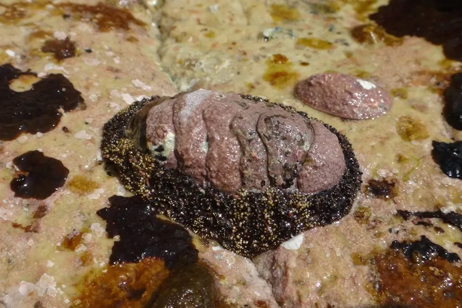

软体动物 · 动物界
日本花棘石鳖 Liolophura japonica

背上有八块交叠壳板的石鳖，壳板周围长满黑色棘刺，吸附在岩礁上刮食藻类，退潮时常见于石缝间。
- 分类
- 门软体动物门纲多板纲目石鳖目科石鳖科属花棘石鳖属
- 栖息环境
- 岩礁海岸潮间带中上区，浪击强烈、藻类繁茂的岩石表面
- 地理分布
- 西北太平洋，包括中国东南沿海、日本、朝鲜半岛和台湾
- 保护级别
- 尚无保护级别；种群受海岸开发和采集影响
物种志
日本花棘石鳖的身体呈椭圆形，长约五至八厘米，背面由八块交叠的壳板组成，壳板呈灰褐至黑褐色，表面有细密的颗粒和花纹，壳板周围的一圈环带上密生黑色的棘刺，花棘石鳖之名由此而来。腹面是宽大的足部，吸力很强，能紧紧吸附在岩石上。头部没有触角，只有口和齿舌，齿舌上长着磁铁矿质的齿，能刮下岩石表面的藻类。
它分布于西北太平洋，包括中国东南沿海、日本、朝鲜半岛和台湾，栖息在岩礁海岸的潮间带中上区，喜欢浪击强烈、藻类繁茂的岩石表面，常成群吸附在石缝和砾石下。它昼伏夜出，退潮时躲在石缝里，涨潮后爬出来刮食藻类。繁殖期在夏季，雌雄异体，受精卵在海水中发育，幼虫经浮游阶段后附着到礁石上。它可食用，但肉少，多被当作赶海的小收获，目前尚无保护级别，种群受海岸开发和采集影响。
形态与习性
- 食性用磁铁矿齿舌刮食岩石表面的藻类
- 体长约五至八厘米，背具八块交叠壳板
- 环带壳板周围密生黑色棘刺
- 栖息环境潮间带中上区岩礁，常吸附石缝间
- 习性昼伏夜出，涨潮后爬出取食
- 利用肉可食但量少，多为赶海小收获
趣味知识
- 石鳖的八块壳板像瓦片一样交叠排列，受惊时能卷成球把腹面护住。
- 它的齿舌上长着磁铁矿质的齿，硬度接近不锈钢，能刮下岩石上的藻膜。
- 退潮时它紧紧吸在石头上，想把它取下来往往要先用刀片撬。